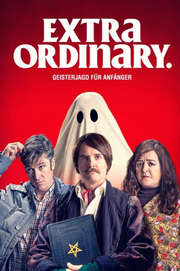

#11950 Extra Ordinary
 
 IMDB-Wertung: 6.6 / 10
IMDB-Wertung: 6.6 / 10  Tomatometer: 100
Tomatometer: 100  Metascore: 70
Metascore: 70 
Fahrlehrerin Rose hat eine besondere Fähigkeit: Sie kann mit Geistern reden. Doch seit ihr Vater bei einem Ritual in ihrer Kindheit gestorben ist, versucht sie diese Gabe zu vergessen. Erst als sie Martin kennenlernt, der von seiner toten Frau heimgesucht wird und dessen Tochter in einer Opferzeremonie dem abgehalfterten Sänger Christian zu einem Comeback verhelfen soll, macht sie wieder von ihrer Fähigkeit Gebrauch. Zwischen Seelen, dunklen Kräften und eigenwilligen Menschen entsteht so ein eigenwilliges Chaos.
Jahr: 2019
Dauer: 94 Minuten
FSK: 12
Land: Irland Studio: UFATonspuren: DTS - ,
Untertitel: Deutsch,
Auflösung: 1080p (1920x800) Größe: 4075 MB
Genre: Horror, Komödie, Fantasy
Regisseur: Mike Ahern, Enda Loughman
Drehbuch: Mike Ahern, Demian Fox, Maeve Higgins, Enda Loughman
Soundtrack: George Brennan
Darsteller:
- Barry Ward als Martin Martin
 Will Forte als Christian Winter
Will Forte als Christian Winter- Claudia O'Doherty als Claudia Winter
 Jamie Beamish als Brian Welsh
Jamie Beamish als Brian Welsh- Carrie Crowley als Marion Mularkey
- Siobhan McSweeney als Boring Noreen
- Sara Dee als Ghost Voices
- Maeve Higgins als Rose Dooley
- Terri Chandler als Sailor Dooley
- Risteard Cooper als Vincent Dooley
- Emma Coleman als Sarah Martin
- Mary McEvoy als Janet
- Sarah O'Farrell als Levitating Teenage Girl
- Agatha Ellis als Young Rose
- Jon Cheung als Delivery Guy
- Valerie O'Connor als Angela
- Paul Holmes als Chipper man
- Eamon Morrissey als Mr. Daly
- Alison Spittle als Alison
- Daniel Reardon als Posh Older Man
- Jed Murray als Astaroth the Demon
- Mike Ahern als Bin Man
- Enda Loughman als Bellyflop Guy
- Simon Judge als Goat Farmer
- Fergal Brennan als Goat Farmer
- Vincent Ahern als Goat Farmer
- Daniel Fitzpatrick als Goat Farmer
- George Brennan als Goat Farmer
- Dylan Roche als Goat Farmer
- Aggie Ellis als Young Rose
Datei: X:\2019(A-F)\Extra Ordinary (2019, FSK12, 1920x800).mkv seit 26.10.2019
Festplatte: HD 2018(G-Z)-2019(A-Z)
 Es gibt insgesamt 60 Filme in der Gruppe '2019(A-F)'
Es gibt insgesamt 60 Filme in der Gruppe '2019(A-F)'